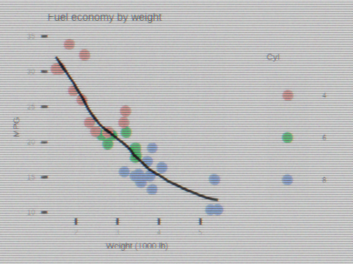
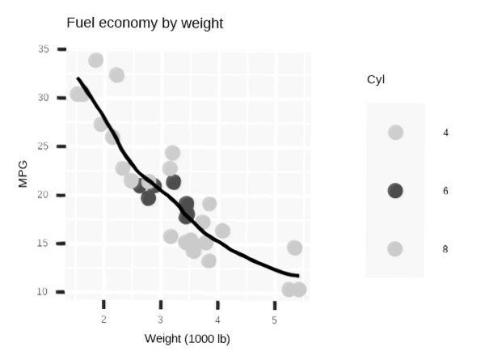
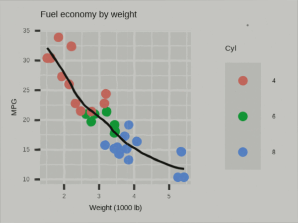
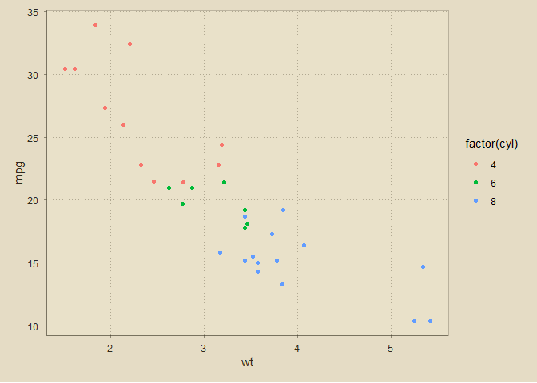
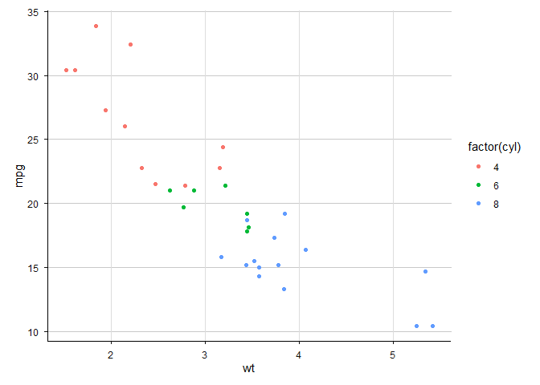

Make ggplot2 figures look like they were scanned, photocopied, projected from old slides, or captured off a CRT—without losing the plot.
This package adds lightweight, composable patina filters (on magick images), a tiny set of journal-era themes, and a panel-aware hand-drawn wobble for that “annotated by a human” vibe.
Built as a vibe-coding project with ChatGPT (GPT-5 Thinking).
Installation
# install.packages("ggpatina")
pak::pak("jprybylski/ggpatina")What this package tries to do
- Old-school vibes, minimal hassle. One-liners to get “old newspaper”, “1970s transparency slide”, “1980s newscast/CRT”, or “educational film” looks.
-
Post-processing, not plotting. You keep your ggplot; patinas work on a
magick-imageof the rendered plot. -
Fonts without global side-effects. Swap to period-appropriate families (e.g., IM FELL, Crimson Pro) in place via
apply_period_fonts()(usesshowtextsafely). - Panel-aware wobble. Hand-drawn raster wobble that can target just the data panel (axes included) so titles and margins stay crisp.
- Print-friendly themes. A few restrained “journal” themes that don’t fight your sizes.
Quick start
library(ggplot2)
library(magick)
# library(ggpatina)
# A vanilla plot
p <- ggplot(mtcars, aes(wt, mpg, color = factor(cyl))) +
geom_point() +
geom_smooth(se = FALSE, linewidth = 0.5, color = "black") +
labs(title = "Fuel economy by weight",
x = "Weight (1000 lb)", y = "MPG", color = "Cyl")
# 1) Period fonts (fonts only; no size changes)
p_fonts <- apply_period_fonts(p, era = "journal-1960s", scope = "targeted")
# 2) Hand-drawn wobble (panel-aware; leave text crisp)
img_wobble <- hand_drawn_wiggle(
p_fonts, width = 2, height = 1.5, dpi = 300,
affect_text = FALSE, fill_bg = "white"
)
# 3) Patina: old journal scan (sepia/mono + dither + slight tilt)
# Tip: provide a paper texture path for extra authenticity, e.g. "inst/extdata/paper_news.jpg"
img_scan <- scanify_journal(
img_wobble,
paper = NULL, # or "path/to/paper_texture.jpg"
sepia = TRUE,
dither = TRUE,
tilt_deg = 0.6,
pad_top_px = 3
)
image_write(img_scan, path = "man/figures/scanify_journal.png", format = "png")More looks (grab-and-go)
# ---------- 1) Transparency slide (Kodachrome-ish transparency) ----------
# Slight keystone + gentle vignette; keep the leak modest so plot stays readable
img_slide <- slideify_transparency(
img_wobble,
ca_px = 4L,
leak_strength = 0.14, # was 0.18; a touch lighter for small images
vignette = 0.22,
skew = 0.010, # keystone ~1% of width
grain = 0.55 # give slide film a bit of tooth
)
image_write(img_slide, path = "man/figures/slide.png", format = "png")
# ---------- 2) Old newscast / CRT ----------
# Pick scanline period from image height so it stays visible but not overbearing
img_crt <- patina_newscast(
img_wobble,
scan_strength = 0.28, # slightly stronger lines for clarity at small dims
ca_px = 1L, # tiny red/blue offset
glow = 0.22,
vignette = 0.18,
noise = 0.28
)
image_write(img_crt, path = "man/figures/crt.png", format = "png")
# ---------- 3) Photocopy ----------
img_copy <- patina_photocopy(
img_wobble,
ghost_opacity = 0.10, # adjustable "washout" (lower = less washed out)
banding = 0.10,
tilt_deg = 0.35,
protect_lines = 0.85
)
image_write(img_copy, path = "man/figures/photocopy.png", format = "png")
# ---------- 4) Educational film (animated GIF) ----------
# A short loop with mild gate weave; pass film params via ... to your patina
img_film <- animate_edu_film(
img_wobble,
n_frames = 20,
fps = 10,
max_dust = 0.3,
# forwarded to patina_edu_film():
warmth = 0.28,
grain = 0.55,
vignette = 0.20,
dust_polarity = "mixed", # allows some darker dust
scratches= 5L,
jitter = 0.1 # a little extra weave for motion to read
)
image_write(img_film, path = "man/figures/film.gif", format = "gif")
Complementary themes
p <- ggplot(mtcars, aes(wt, mpg, color = factor(cyl))) + geom_point()
p + theme_newspaper()
p + theme_edu_film()
p + theme_newscast()Journal-flavored themes
p <- ggplot(mtcars, aes(wt, mpg, color = factor(cyl))) + geom_point()
p + theme_journal_1900s()
p + theme_journal_1930s()
p + theme_journal_1960s()